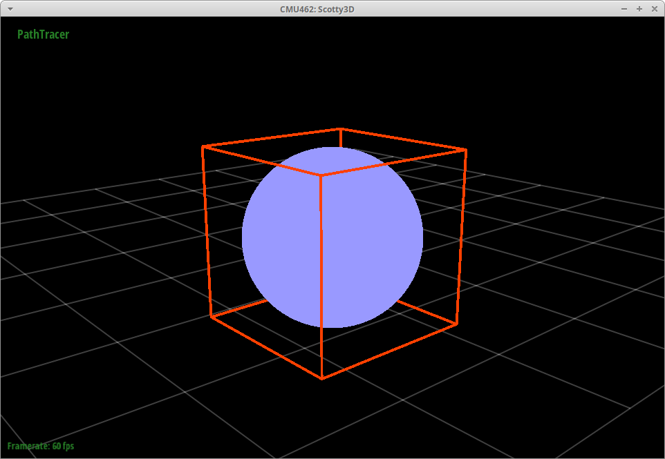
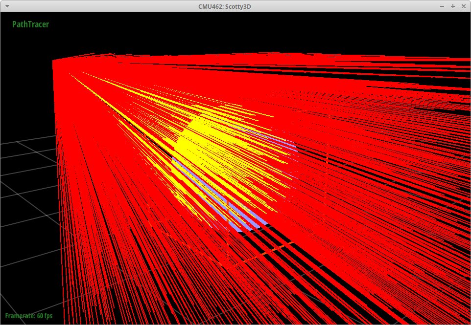
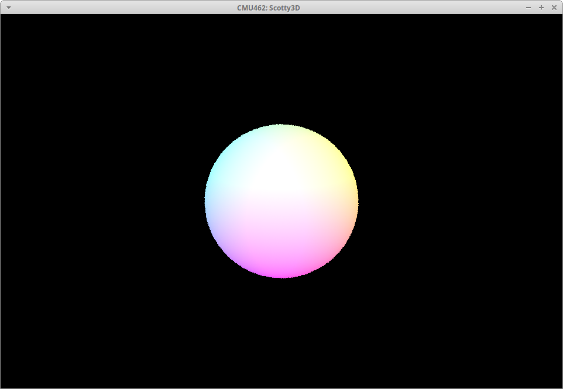
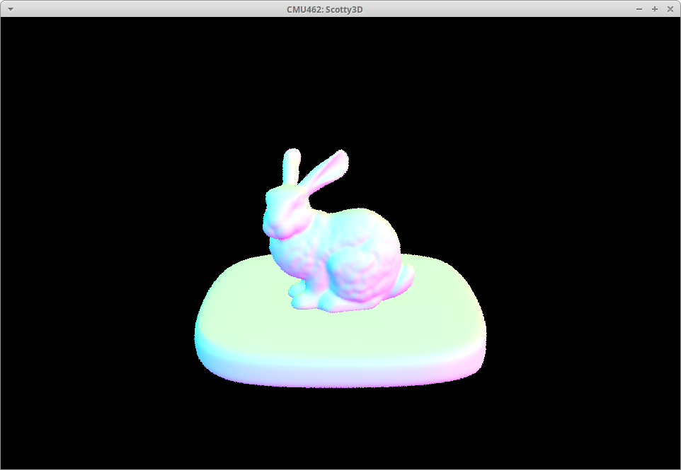
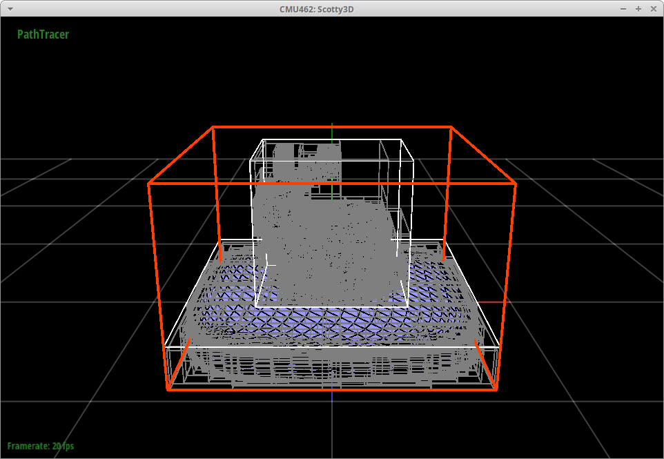
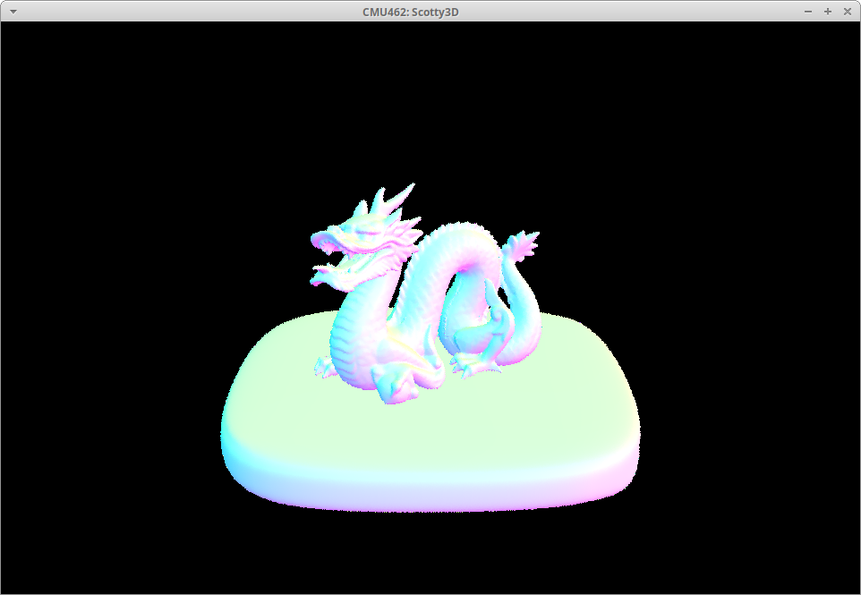
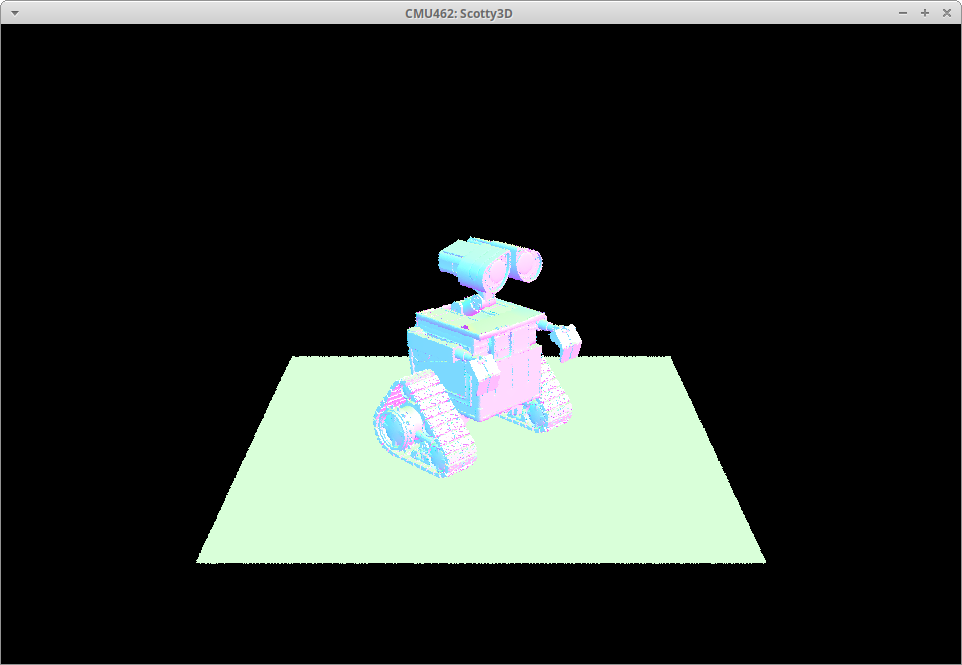
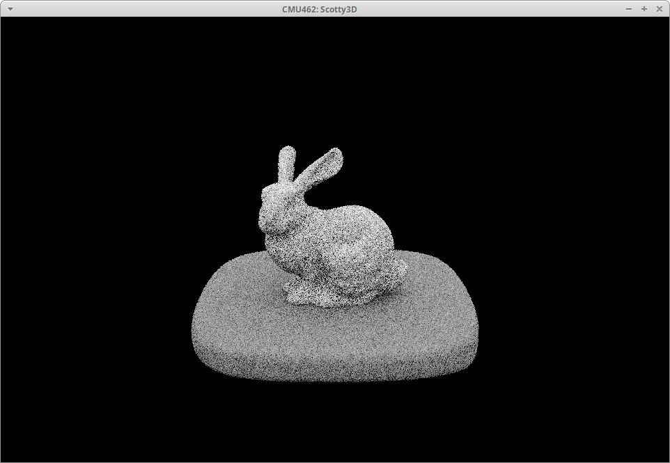
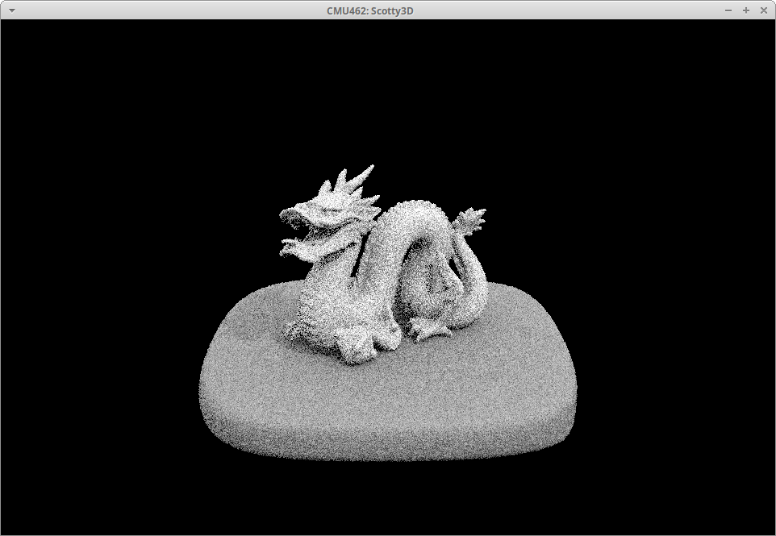
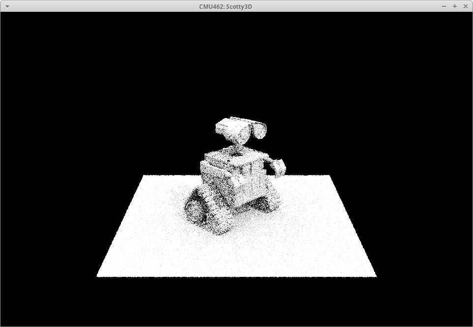

3D Graphics
Computer graphics is so rich with mathematics, physics, algorithms and art. I wish I had dived into the topic sooner.
CMU’s 15-462/662
During my time at CMU, I audited the computer graphics course taught by Professor Crane and I’m glad I did! It’s such a fascinating topic and Crane is such a great professor. Check out my notes from some of the project work below.
Implementing Scotty3D
Scotty3D is a 3D graphics software package that we had to implement as part of the coursework. One of the features is path tracing, which allows for realistic rendering.
Rays and intersections
Here is the simple geometry of a sphere. (Ignore the red box for now, that just depicts the bounding volume of the model.) 
Imagining shooting rays out of a camera and checking if they hit an object in the scene, as depicted in the image below. 
These ray intersection checks are the basic concept behind ray and path tracing. They allow you to simulate the paths that light would take as they reach the camera sensor.
 The image above shows a visualization of the normals computed at each intersection point with the sphere. My intersection computations check out! Nothing a little bit of linear algebra couldn’t handle.
Acceleration using bounding volume hierarchies (BVH)
Unfortunately, ray intersection computations can add up and rendering complex models is incredibly slow. A spatial data structure known as bounding volume hierarchies (BVH) allows us to speed up the intersection queries. (Note that while I refer to it as a “spatial” data structure, it actually partitions primitives, not space, like some others do.)
Check out this model of a bunny… 
and it’s corresponding BVH… (the visualization below gives you a little sense of how the bunny’s primitives are broken up into separate volumes.) 
I ran a performance experiment on the bunny model, along with the dragon and Wall-E models shown below.  
To give a sense of the complexity of the models, the table below shows the number of vertices they contain.
| Model | Vertices |
|---|---|
| bunny | 16,852 |
| dragon | 52,562 |
| Wall-E | 480,652 |
Building a BVH data structure is not free, but I can reuse it multiple times if I’m rerendering the same model. Amortized cost!
| Build Time (s) | |||
|---|---|---|---|
| Model | Naive | BVH | Ratio |
| bunny | 0.0109 | 0.1248 | 11.4x |
| dragon | 0.0537 | 0.4968 | 9.3x |
| Wall-E | 0.0766 | 0.9893 | 12.9x |
Here I show the time it takes to render the models shown on this page. Look at that render speedup, up to two orders of magnitude in some cases!
| Render Time (s) | |||
|---|---|---|---|
| Model | Naive | BVH | Ratio |
| bunny | 37.859 | 0.3508 | 0.009x |
| dragon | 174.3522 | 0.4308 | 0.002x |
| Wall-E | 3.4061 | 0.3799 | 0.112x |
Let there by light! (Shadow rays)
Taking things a step further, I now use the ray tracing implementation to check for obstacles between geometry and light sources. This enables me to render shadows.   
They’re a bit noisy but so far, so good! We’ll address that later.
More to come!
Stay tuned for more content related to materials and environmental lighting.
Blast from the past
Back in 2009, I took a course on Maya at NYU. Here’s a demo of some of my work. Enjoy!